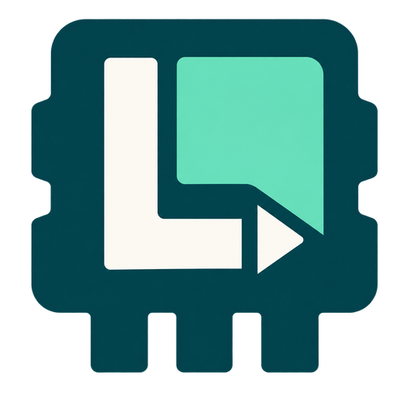

Retrouve tes jeux
Rassemble tes jeux installés, tes favoris et tes fiches dans une bibliothèque. Le catalogue peut être enrichi à partir des sources que tu choisis.

LudemisLudemis rassemble ta bibliothèque sur Windows : retrouve tes jeux, personnalise leurs visuels et lance ta prochaine partie.
Windows 10 / 11 · 64 bits · Microsoft Edge WebView2 requis
Illustration de présentation
Rassemble tes jeux installés, tes favoris et tes fiches dans une bibliothèque. Le catalogue peut être enrichi à partir des sources que tu choisis.
Jaquette, bannière ou logo : utilise une proposition SteamGridDB ou importe une image depuis ton PC.
Consulte tes informations de jeu et ton temps de jeu. Les fonctions de sauvegarde t’aident à retrouver ta progression.
La connexion Google est facultative. Lorsqu’elle est activée, Ludemis peut synchroniser les données de bibliothèque et les sauvegardes configurées dans ton propre Google Drive.
L’autorisation drive.file concerne les fichiers créés ou utilisés avec Ludemis, pas l’ensemble de ton Drive.
Une question ou une demande concernant tes données ?
Écris à pichoutou2010@gmail.com.
Le logiciel et ses ressources conservent leurs droits respectifs. Ludemis n’est pas affilié à Google, Valve ou SteamGridDB. Les téléchargements disponibles sont ceux publiés sur le dépôt du projet.